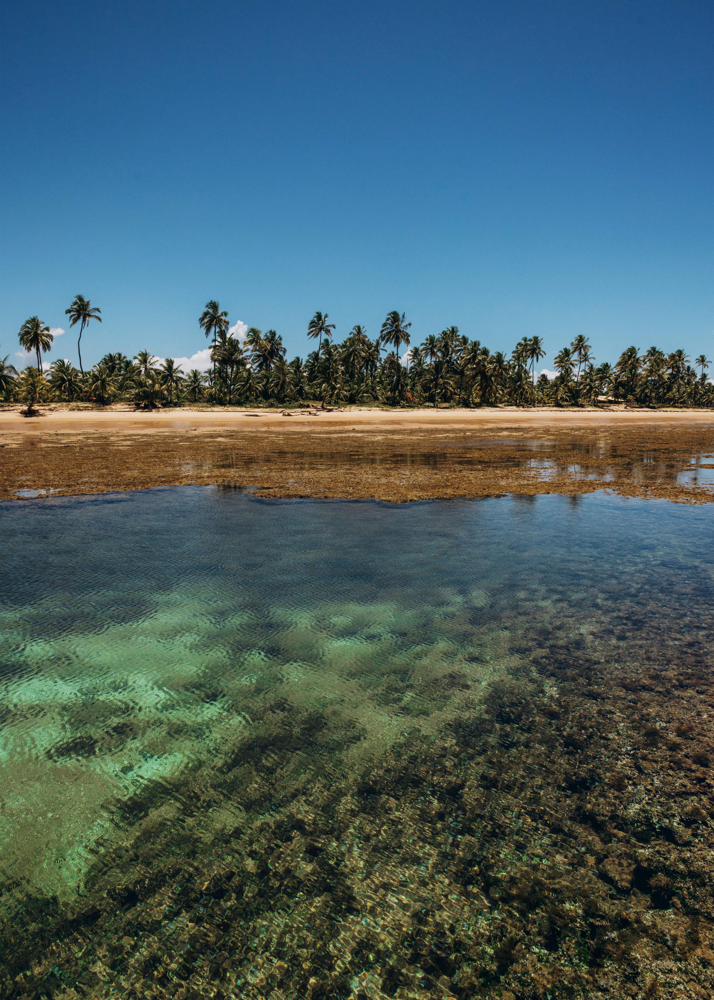
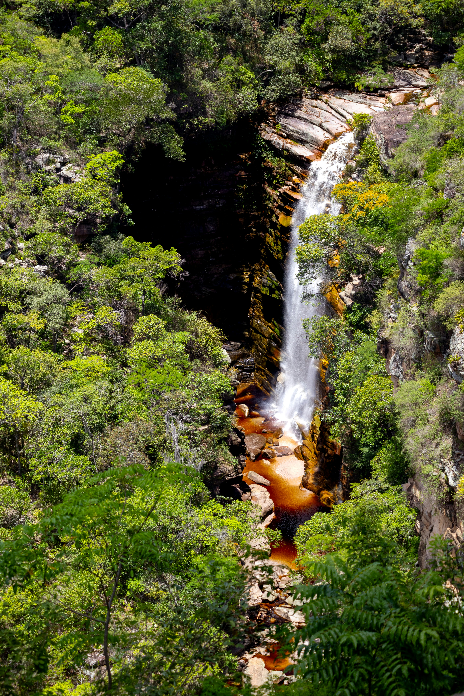
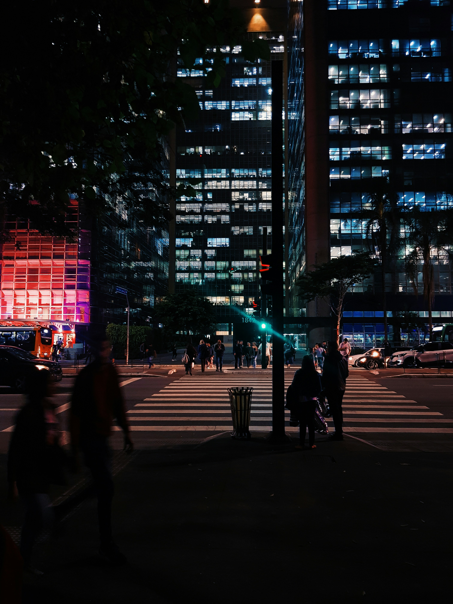

Beach & Slow
Islands, warm water, long beach days and somewhere to properly switch off.
Explore beachesDiscover Brasil
Find the Brasil that fits you.
From vibrant cities and legendary nightlife to island escapes, culture and extraordinary landscapes, discover where your first trip to Brasil could take you.
Explore destinationsStart with the feeling
You do not need to know the geography of Brasil yet. Start with what you want from your trip.

Islands, warm water, long beach days and somewhere to properly switch off.
Explore beaches
Music, dance, food, history and the cultural experiences that make Brasil unforgettable.
Explore culture
Waterfalls, wildlife and dramatic landscapes for travellers who want more than a beach holiday.
Explore adventures
Big-city energy, restaurants, music and nights that rarely finish early.
Explore nightlifeOne country, many trips
Brasil is difficult to reduce to one type of holiday. A trip can mean dancing in Salvador, exploring Rio de Janeiro, slowing down on Ilha Grande or experiencing the energy of Sao Paulo.
Brasil Bound helps first-time visitors understand these differences before deciding where to go.
Where could you go?
Start with a few of Brasil's most distinctive destinations and see which matches your travel style.
Iconic beaches, dramatic scenery and some of Brasil's most famous nightlife.
Afro-Brasilian culture, music, history and food in one of the country's most distinctive cities.
Beaches, tropical scenery and a slower island pace away from the major cities.
Beaches, outdoor life and a sociable atmosphere combining city convenience with island living.
Before you book
Understand transport, money, safety, connectivity, language and other practical considerations before your first trip to Brasil.
Read the essentials